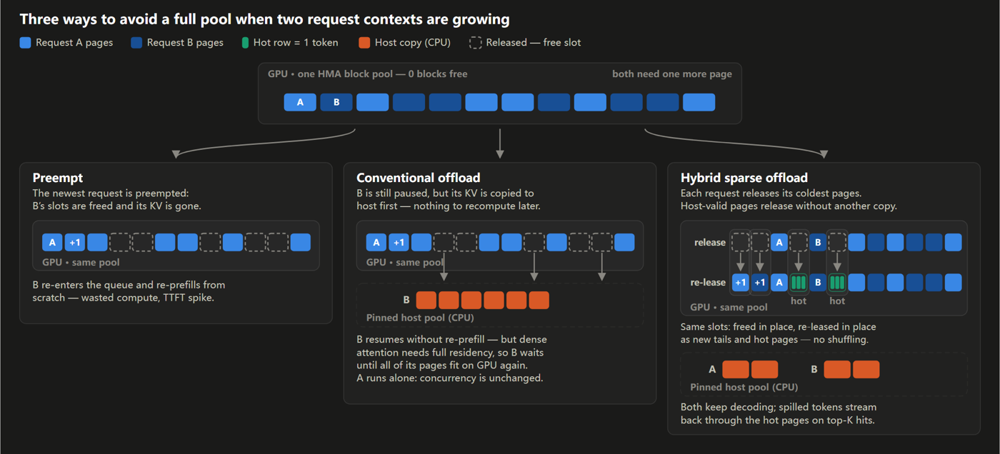
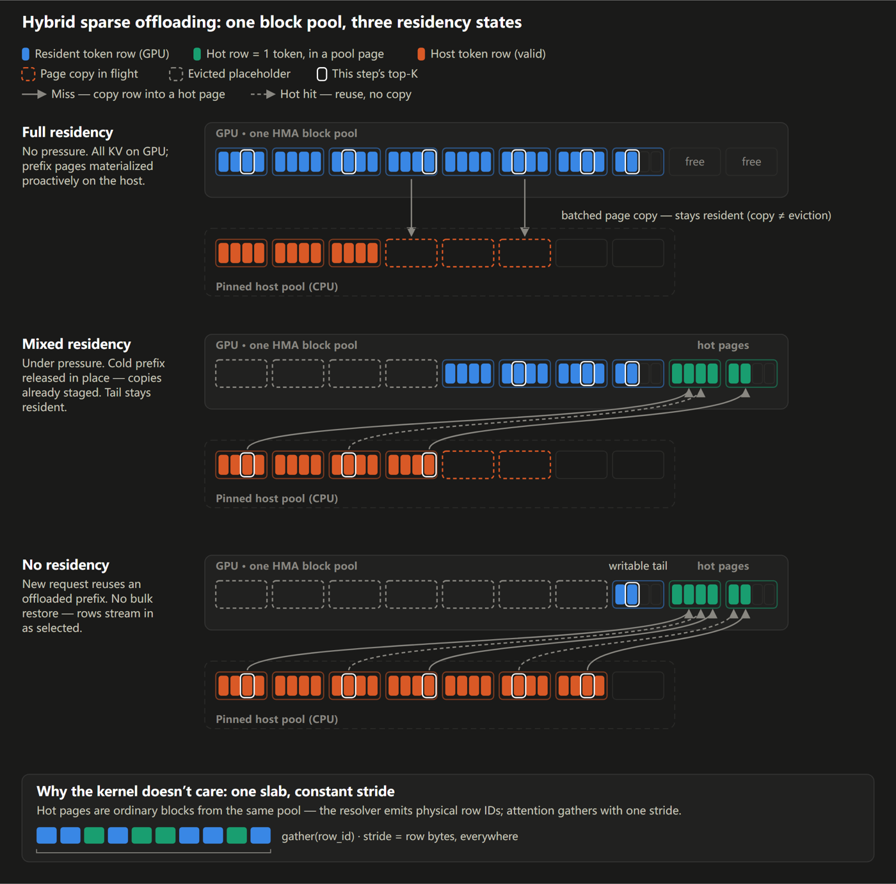
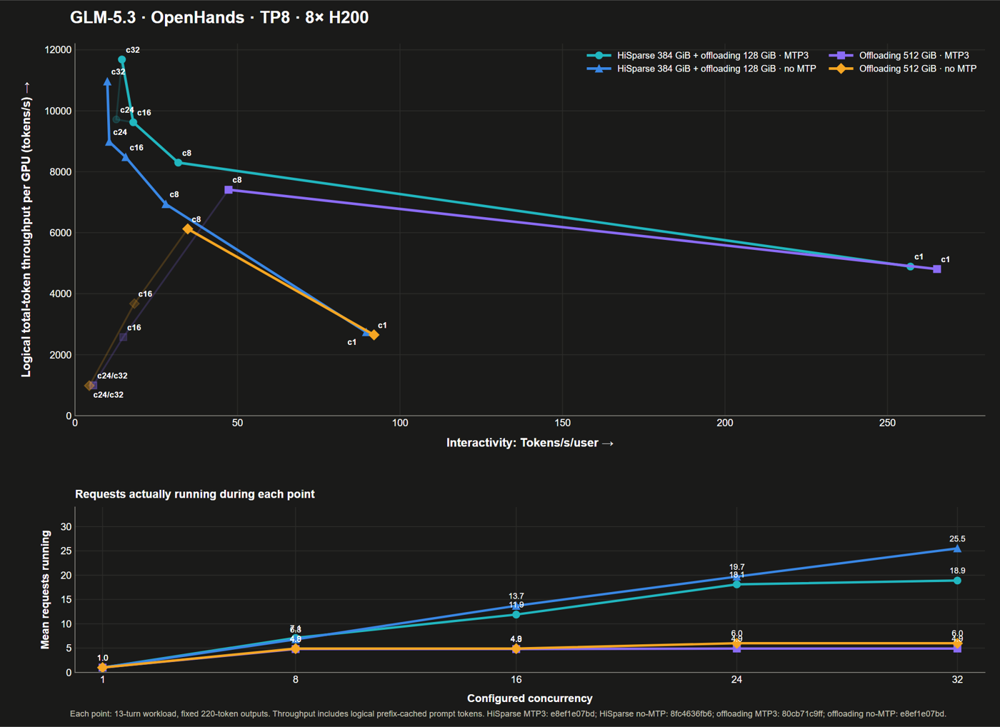

vLLM官方博客GLM 5.3优化系列第一篇，讲Hybrid HiSparse卸载。正文中文导读尽量保留其数字与机制，SVG原图来自官方博客。
vLLM的目标很直白：把推理变快、变便宜。本文是GLM 5.3优化系列的第一篇，讲怎么靠Hybrid HiSparse在一台8×H200节点(对这种体量的模型内存抓得很紧)上做强装部署。关键成效是让GLM 5.3得以在这套硬件上跑满100万上下文：此前在这个硬件上做不到：并在各上下文长度下拿到明显更高的并发。
agentic负载的特点是许多并发请求、每段上下文都很长且不断变长。GPU块池是固定的，KV cache终会放不下新并发请求的新块。此前两道旧解：一是抢占式(preemption)，选一个请求丢它的KV稍后再prefill回来，每被逐出一次该请求的TTFT就要原样再吃一遍；二是常规offloading，把块搬到宿主内存，可密集attention要求每个token都留在GPU上，所以并发请求数仍被GPU内存钉死(见下图一：同一个池、两个在长高的请求，抢占vs卸载)。
对稀疏MLA类KV cache，indexer只挑top-K个token、attention也只看向这些。HiSparse正利用这点：除被选中的token外把其余KV全部卸到CPU，于是每个请求对GPU内存的占用就有了一个有效上界。indexer的KV会留在GPU、并且随上下文还会长，但它整体小得多；GLM 5.3的IndexShare意味着每四个稀疏-MLA层共享同一个indexer层，把这块成本也摊薄了。
Hybrid HiSparse再进一步：只要GPU还放得下，KV就尽量留在GPU上、不卸；只有KV吃紧时才动用上面这套HiSparse卸载。热缓冲页(hot buffer)按token索引，所以一页能装来自许多不同CPU块的token，跨大段上下文省下搬运。也就是说，只有系统在KV压力下、即并发更高时，它才付出CPU-GPU搬运的代价，热页来自与常规KV页同一个块池、同一个KV-tensor，对稀疏MLA kernel来说看起来就是普通页。Hybrid HiSparse会同时保留两个请求解码：每个请求就地释放它最冷的页、同一块槽位再租给新尾与热页，两者都继续decode。只有它做得到两个请求同时在跑(这也是下图一右下格的要点)。

驻留状态按页跟踪，压力涨落时请求在三种态之间移动。满驻留(full)：只要压力不到，所有稀疏-MLA KV都留在GPU，完成的整段前缀页则主动复制一份进宿主内存备预案。混合驻留(mixed)：请求的尾部继续留在GPU，较老的页只存在CPU里，indexer要的那几行放进热缓冲；块表里真块与空占位符并排，尾部永不被逐出。用一个融合kernel解top-K：驻留token原地读，热token读并刷新其LRU项，miss时把pinned宿主内存的单个行拷进一个LRU槽位。decode路径上没有任何地方要等CPU的裁决，所以它可以继续被CUDA graph捕获。零驻留(no)：一个只存在于CPU内存里的前缀被新请求复用，开始时全用占位符加一个热页；行在indexer选中时才来，因此只为模型真正attend到的内容付钱，而不是为整段历史付钱。
三种态之所以成立，是因为缓冲页并不是一块独立分配：它就是一块普通KV-cache块，经vLLM的Hybrid Memory Allocator(HMA) 与驻留页共用同一个块池，请求第一次需要时租下、不需要时还回；一请求释放的块能成为另一请求的缓冲容量。核心里无论是驻留页里的行还是热缓冲里的行，resolver都只给HMA行id，由HMA用同一个stride一并抓取。
HiSparse还会在压力到来之前就做准备：一段可缓存前缀页完成后，在继续用GPU服务它的同时就排起到CPU的拷贝；之后若GPU缓存填满，这页无需再拷便能释放GPU槽。就算压力先打到更新的页，那页的GPU槽在拷贝一排队即可立刻复用，拷贝完成时CPU副本即可用来做前缀复用。hisparse-glm分支把这条路径做得轻：前传结束后一次性同launch把全部稀疏-MLA层拷过去，拷贝被排在该模型的GPU stream上，从而同步简单又安全。

Hybrid HiSparse本质是对共享HMA池的一个驻留策略 + 一个连接器，其它KV机制照旧。别的缓存组仍用普通前缀缓存 / 传输 / offloading；indexer KV完全不被它碰，标准的OffloadingConnector就能用普通块粒度独立把它卸载。来自P/D拆分的导入在某个前缀放不进驻留时可直接落到宿主侧；投机解码经由每步可重放的resolver计划、与该请求共享热态。
热缓冲默认每个请求2倍top-K行，保证命中率高同时保持缓冲体积小。由于同一TP rank组里MLA KV相同，pinned宿主池按每个DP副本分配、由它局部的各TP rank共享：TP rank 0写共享副本、每个rank都可读，再以CUDA event保证流顺序。
在8×H200上用OpenHands的多轮agentic工作负载(来源：lmsys的glm5.2优化博客)：13轮对话，第一轮74,160 token、后续轮753 token、输出固定220 token。两侧TP8部署都用MTP3、FP8 KV、admission上限142K、max_num_batched_tokens=32768、max_num_seqs=256、gpu_memory_utilization=0.92。offloading基线用512 GiB卸载池；Hybrid HiSparse把同一份宿主预算切成384 GiB HiSparse池 + 128 GiB普通offloading。

图上横轴是纯逻辑总吞吐按8卡均摊、纵轴是交互度(1000除以平均TPOT)；下图下半给的是各benchmark点测出的平均非零并发运行请求数(vllm:num_requests_running)。你能看到在更长上下文区段，因为稀疏-MLA的驻留被限定住，HiSparse能撑住更多并发请求；而热缓冲给每个请求加一块固定的GPU成本，所以短上下文时普通驻留反而能放下更多请求。加大热缓冲会用一部分这种容量换取更大的热命中覆盖。
作者计划让Hybrid HiSparse随vLLM v0.30广泛可用；现阶段论文全文与HiSparse方法见arXiv 2608.07009(hisparse)与2603.12201(IndexShare)。上文给出的启动命令与客户端配置都可从原文的复现附录拿到。计算器的数字只是预估而非保证的serving上限，运行时工作区、请求长度倾斜与调度行为都可能让实际并发更低；另外MTP会进一步限制并发，因为其热缓冲要一次容纳所有验证token，发布时每个热缓冲需按(投机token数+2)×top-K来定体积，这一约束作者也计划继续收紧、目前尚未被计算器计入。
参考：https://vllm.ai/blog/2026-09-08-glm53-part1-hybrid-sparse-offloading